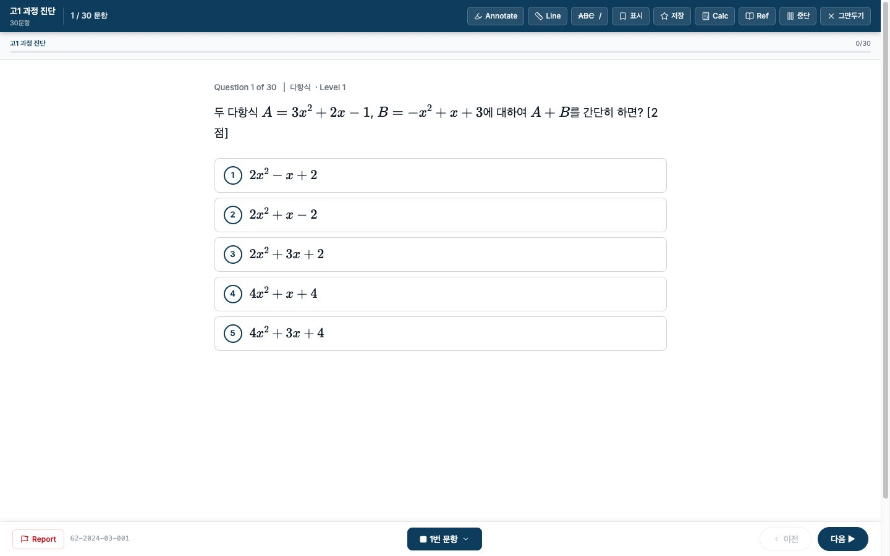
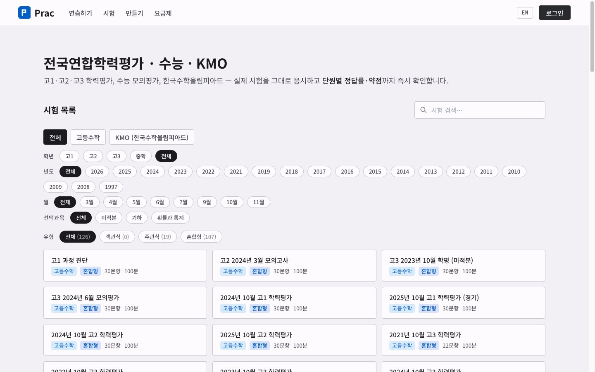
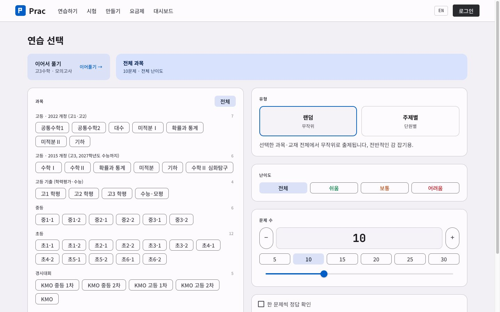
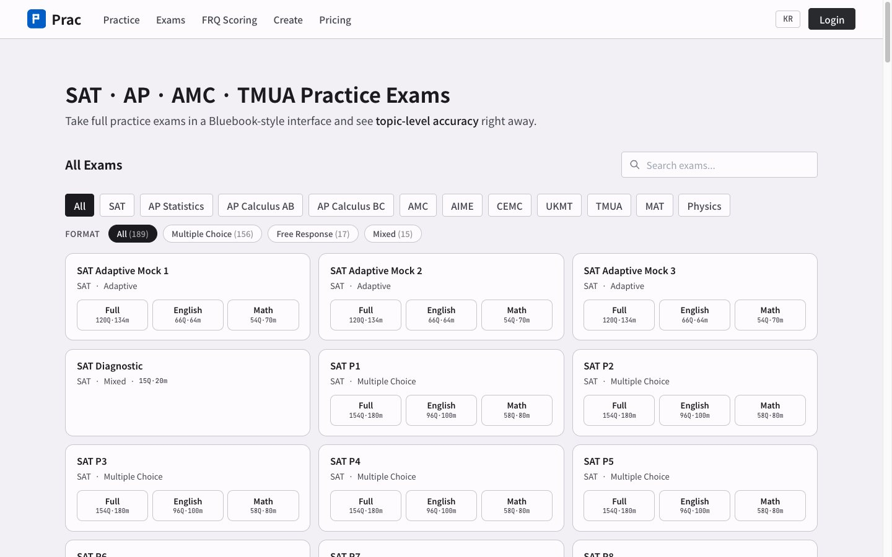

기출을 실제 시험 화면에서 풀고, 약한 단원을 바로 확인합니다
시험지 PDF를 눈으로 읽는 것과 제한시간 안에 화면에서 푸는 것은 다릅니다. Prac에서는 타이머를 걸고 풀고, 제출하면 단원별 정답률이 바로 나옵니다. 틀린 문제는 자동 오답노트에 모이고, 학생은 다 맞힐 때까지 그 문제만 다시 풉니다.
카드 등록 없이 시작합니다. 진단테스트는 계정마다 첫 1회가 무료입니다.

운영 중인 서비스 화면입니다(2026년 10월 27일).
시험을 고르고, 풀고, 결과를 봅니다
항목에 마우스를 올리거나 누르면 그 화면이 나옵니다.
- 시험 목록학년·연도·시행 월·선택과목으로 걸러 기출 시험을 고릅니다.
- 시험 화면실제 시험과 같은 제한시간 안에 풉니다. 애매한 문항은 표시해 두고 제출 전에 다시 봅니다.
- 단원 연습과목·단원·난이도·문제 수를 골라 필요한 부분만 연습합니다.
- 영어권 시험SAT, AP, AMC, TMUA 같은 영어권 시험도 같은 방식으로 풉니다.



들어 있는 시험
자체 제작 문제가 아니라 실제로 시행된 시험입니다.
고1·고2·고3 전국연합학력평가
3월부터 11월 시행분까지 10년 누적 기출입니다.
수능·모의평가
공통과목과 미적분·기하 선택과목 기출입니다.
한국수학올림피아드 1·2차
경시를 준비하는 학생용 기출입니다.
주관식은 풀이 과정까지 채점합니다
객관식은 제출하면 바로 채점됩니다. 주관식은 손으로 쓴 풀이를 올리면 Prac이 채점 기준 항목마다 점수를 매기고, 어디서 감점됐는지 이유를 적어 줍니다.
풀이를 올립니다
손으로 쓴 풀이를 사진으로 찍어 올리거나 화면에서 직접 입력합니다.
Prac이 채점 기준으로 검토합니다
채점 기준의 항목마다 풀이가 조건을 채웠는지 확인합니다.
항목별 결과를 봅니다
어느 항목에서 점수를 받았고 어디서 감점됐는지 1~2분 안에 확인합니다.
틀린 문제는 학생이 다 맞힐 때까지 Prac이 챙깁니다
시험에서 틀린 문제는 자동 오답노트에 저절로 모입니다. 따로 옮겨 적지 않아도 됩니다.
자동으로 모입니다
여러 시험에서 틀린 문제가 한곳에 모이고, 어느 시험의 몇 번 문제였는지 함께 남습니다.
몇 번 틀렸는지 셉니다
같은 문제를 또 틀리면 횟수가 쌓여, 자꾸 틀리는 문제가 먼저 눈에 띕니다.
틀린 문제만 다시 풉니다
결과 화면에서 틀린 문제만 골라 다시 풀고, 다 맞을 때까지 되풀이합니다.
선생님·학원은 Prac에서 학생별 결과와 오답을 관리합니다
선생님 플랜에서는 맡은 학생들의 시험과 결과를 한 화면에서 봅니다.
시험 한꺼번에 내 주기
학생들에게 같은 시험을 한 번에 내 줍니다.
학생별 결과와 약한 단원
학생마다 시험 결과와 단원별 정답률, 진단 보고서를 봅니다.
틀린 문제만 다시 내 주기
학생이 틀린 문제만 모아 다시 풀게 하고, 다 맞을 때까지 확인합니다.
주관식 채점 포함
플랜마다 주관식 풀이 채점 횟수가 포함됩니다.
요금
진단테스트는 무료입니다. 계속 쓰기로 하면 학생은 기간을, 선생님은 관리하는 학생 수를 기준으로 결제합니다.
| 대상 | 결제 방식 | 가격 |
|---|---|---|
| 학생 · 자기주도 학습 | 30·90·180일 단위로 한 번 결제합니다. 자동 갱신은 없습니다. | 30일 49,000원부터 |
| 선생님·학원 · 학생 일괄 관리 | 학생 5·20·50명 플랜이 있습니다. 시험을 한꺼번에 내 주고 결과를 실시간으로 봅니다. | 학생 1명당 월 1만원 |
2026년 10월 27일 satprac.app 기준입니다. 자세한 내용은 요금제 페이지에서 확인해 주세요.